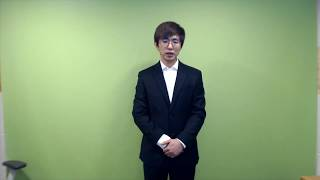

죄송합니다
안녕하세요. 저는 트위치에서 방송을 하고 있는 스트리머 케인입니다. 먼저 저의 말과 행동으로 인해 큰 피해를 끼치고 실망을 드린 샌드백님, 시청자 분들께 죄송합니다. 지금부터는 제가 정리한 글을 보면서 이야기하겠습니다. 저는 3월 18일 우희짱님의 해명 방송, 샌드백님의 반박 방송에 대해 누구의 편도 들지 않고 중립적인 위치에서 방송한다고 말하였으나, 일방적으로 우희짱님 편에 선 방송을 했습니다. 또한 제3자인 제가 당사자들의 연애 문제에 주제넘은 간섭을 했습니다. 그로 인해 당사자 및 많은 분들에게 실망을 안겨드렸습니다. 2018년 저는 평소 친하게 지내는 우희짱님에게 제가 좋아하는 샌드백님을 소개시켜주었고 두 분은 잘 사귀며 공개 연애를 했습니다. 공개 연애 후 서로 평소보다 방송이 잘 되지 않아 방송으로는 서로 이별을 했다고 말을 한 후 두분은 계속 사귀었고, 2020년 2월 초에 두분은 헤어졌습니다. 헤어진 후 우희짱님은 샌드백님이 방송에서 자꾸 본인 얘기를 해서 시청자들의 언급, 이간질, 커뮤니티에 본인의 부정적인 글에 대해 힘들다는 연락이 왔습니다. 그 후 저도 샌드백님이 우희짱님에 대해 언급을 하는 방송을 보았습니다. 그래서 제가 샌드백님에게 연락을 취해 만났습니다. 평상시 둘의 연애 갈등은 우희짱님과만 이야기를 하였고 샌드백님의 말은 만나서 그때 들었습니다. 말을 다 듣고 그동안 제가 샌드백님에게 오해하고 있는 부분들이 많이 있었습니다. 하지만 그 많은 것들이 모두 오해였습니다.
해당 영상은 다른 유튜버들의 사과 영상들처럼 무거운 분위기에서 진지하게 찍은 영상이지만, 케인이 자숙을 마치고 복귀한 뒤로는 시청자들의 놀림감 소스로 쓰이는 영상이 되었다. 트위치와 유튜브에서는 인기있는 밈이 되어 해당 영상과 비슷한 구도로 크로마키를 배경으로 하고 정장을 입어 사과하는 모습을 따라하는 밈이 생겼다. 특히 2020년에는 케인뿐만 아니라 오킹, 룩삼, 한동숙, 서새봄, 견자희 등 트위치 봤다하면 알 법한 초규모 스트리머들이 죄다 논란 후 사과를 하게 되었으며, 결정타로 2020년 유튜버 뒷광고 사건이 터지면서 규모 상관없이 많은 방송인들이 케인이 했던 방식과 똑같이 크로마키를 치고 사과방송을 진행하면서, 이들의 잘못에 비해 케인이 범한 잘못은 사소한 수준으로 여겨졌음에도 모범적인 사죄의 태도를 보여줬기에 사건 당시의 부정적인 여론이 희석되고 죄송합니다 영상이 더 유행하는 계기가 되었다. 한마디로 '자숙의 정석'이 된 영상이다.